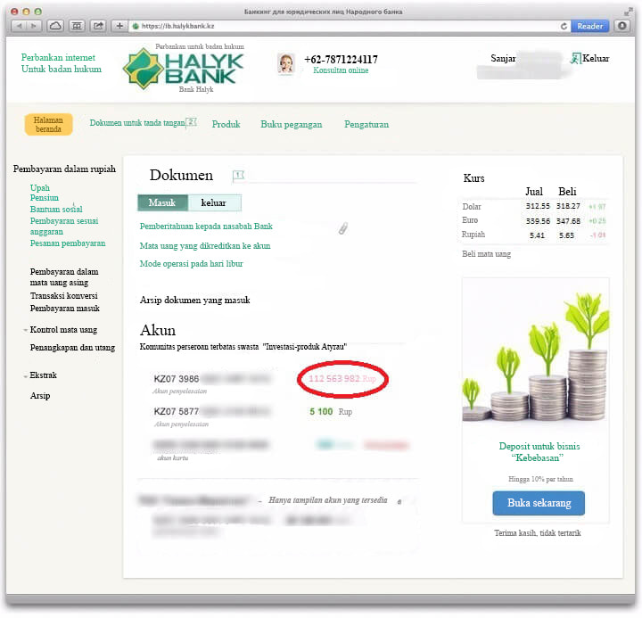

Seorang mahasiswa biasa dari Bandung berhasil memenangkan uang 5 miliar dan membeli sebuah mobil Mercedes mewah, dan di hari yang sama mobil itu dicuri orang!
Herman Febrianto , diterbitkan
Seorang mahasiswa biasa asal Bandung datang ke kantor polisi untuk melaporkan tentang pencurian mobilnya. Menurut anak muda satu ini, dia baru saja membeli mobilnya beberapa jam sebelum kejadian tersebut dan mobilnya itu dicuri dari tempat parkir di dekat rumahnya yang memang tidak ada penjaganya. Polisi berjanji untuk berusaha menemukan mobil itu, tapi Andri - nama sang mahasiswa - sama sekali tidak terlihat marah atau pun kesal karena kejadian tersebut. Dia pun menceritakan kisahnya:
"Sebulan lalu saya hanyalah pemuda biasa yang hanya punya 50 ribu rupiah di kantongnya! Tapi sekarang, saya bisa beli mobil Mercedes baru dan semua yang sudah lama saya impi-impikan: rumah kepunyaan sendiri, jalan-jalan ke Jepang, membuka bisnis saya sendiri... dan banyak lagi. Saya benar-benar tak terlalu peduli dengan mobil yang dicuri itu. Saya tinggal beli mobil baru lainnya!"
Kehidupan Andri berubah ketika pacarnya tiba-tiba jatuh sakit, dan Andri bahkan tak punya uang untuk mengantarnya pulang ke rumah menggunakan taksi.
"Saya malu sekali ketika mengantar pacar saya Dina pulang dan harus meminta uang 100 ribu kepada orang tuanya untuk membayar taksi",
Andri menceritakan pengalamannya.
Rekening bank Andri.
Semuanya berubah hanya dalam waktu satu bulan saja
Sebenarnya, awalnya Andri bukan orang yang percaya takhayul. Dia tak pernah percaya pada pertanda takdir atau semacamnya. Penghasilan dari pekerjaannya sebagai pelayan paruh waktu di sebuah restoran sangat kecil, dan dia selalu kekurangan uang. Tapi kemudian keadaannya berubah. Muak dengan pekerjaan dan atasannya yang sangat dia benci, Andri memutuskan untuk mengambil langkah yang tidak biasa. Adiknya pernah memberitahu dia tentang Money Amulet yang dapat menarik uang seperti magnet. Dan Andri memutuskan untuk memesannya.
Pada hari ketika dia pergi ke kantor pos untuk mengambil pesanannya, Andri menemukan uang tergeletak di trotoar. Andri menganggap ini sebagai pertanda baik. Pada saat itu dia berpikir bahwa amulet itu sudah mulai bekerja!
Money Amulet ini memang mampu mengubah kehidupan bahkan orang-orang yang paling putus asa sekalipun. Dan Andri mengalaminya sendiri.
"Saya harus mengubah sesuatu dalam hidup saya, jadi saya memutuskan untuk memesannya. Saya pikir toh amulet ini tidak mahal. Bagaimana jika amulet ini ternyata benar-benar memiliki khasiat yang ajaib? Bagaimana jika saya bisa menemukan pekerjaan dengan gaji yang bagus? Bagaimana jika...? Toh tak ada ruginya bagi saya, jadi saya putuskan untuk mengambil kesempatan ini! Saya memesan amulet ini, dan beberapa hari kemudian saya menerima pemberitahuan bahwa paketnya sudah sampai di kota saya! Di jalan menuju kantor pos, saya menemukan uang tergeletak begitu saja di trotoar. Saya melihat sekeliling, tapi tidak ada siapa-siapa di sana!
Saya pergi ke kantor pos, mengambil amulet saya, dan saat itu juga memutuskan untuk langsung membeli tiket lotre sekadar untuk merayakan pembelian amulet ini. Dan kalian pasti takkan percaya... Saya memenangkan uang dalam jumlah besar! Saya mendapatkan jackpot. Itulah bagaimana ini semua bermula. Awalnya saya memenangkan uang kira-kira 3 juta saja, tapi saya tak berhenti sampai di sana saja dan beli beberapa tiket lagi dari berbagai lotre yang berbeda. 5 dari 8 tiket yang saya beli ternyata menang! Kalau kalian tidak percaya saya, lihat rekening bank saya. Saat ini saya punya 6,6 M. Saya benar-benar takjub! Lama sekali saya hanya bisa terdiam dan menyangka kalau semua ini hanya mimpi. Saya tak pernah memenangkan lotre sebelumnya, dan tiba-tiba saja saya berhasil memenangkan jackpot berkali-kali! Saya beruntung. Sangat beruntung...!" (tertawa)
Setelah memastikan kalau semua ini benar-benar nyata terjadi dan bukan sekadar mimpi, Andri berhenti dari pekerjaan paruh waktu yang dia benci, pekerjaan di mana dia selalu bekerja banting tulang hanya untuk mendapatkan caci maki dan celaan dari atasannya.
"Saya menemui bos saya, yang selalu menyalahkan dan memotong gaji semua pegawainya tanpa alasan. Dari dulu saya selalu bermasalah dengan dia, jadi saya tak sabar untuk bilang padanya jika saya berhenti dari pekerjaan ini. Saya kira semua orang yang pernah bekerja di rumah makan atau restoran pasti akan paham apa yang ada di pikiran saya! Saya acungkan jari tengah saya padanya sambil melempar seragam saya ke lantai di depannya. Beberapa rekan kerja saya mengetahui apa yang terjadi, beberapa bahkan mengambil video kejadian itu di ponsel mereka."
Sejak saat itu, kejadian ini jadi viral.
Saat ini, Andri telah menerima uang hasil kemenangan lotrenya dan ingin membuka restorannya sendiri dengan layanan berkualitas tinggi. Tapi pertama-tama, dia ingin mewujudkan mimpi terbesarnya.
"Segera setelah mendapatkan uang hadiahnya, saya mengajak pacar saya berlibur ke Jepang. Sudah lama kami bermimpi untuk berlibur ke sana. Sekarang kami hanya ingin menikmati hidup kami dan jalan-jalan saja selama beberapa waktu,"
Money Amulet telah lama dikenal mampu menarik kekayaan kepada pemiliknya. Jika Anda menyimpannya di dompet Anda, Anda akan menyaksikan amulet itu mengubah hidup Anda jadi lebih baik dalam waktu beberapa hari saja!
Coba peruntungan Anda!
Putar roda keberuntungan! Dapatkan diskon hingga 50% !

 PUTAR
PUTAR Anda hanya perlu memasukkan nama dan nomor telepon Anda.
Bergegas! Waktu tersisa
09 : 44
Komentar Facebook terbaru